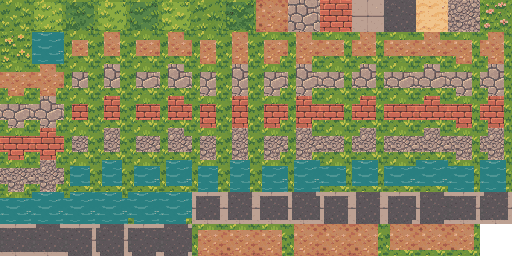
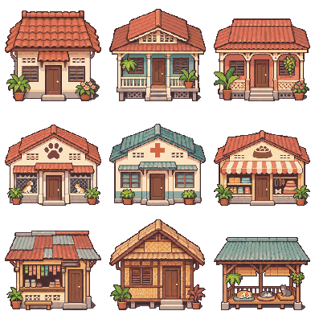
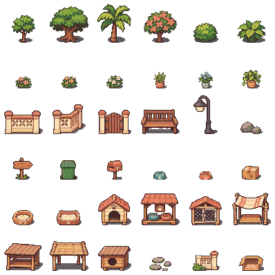
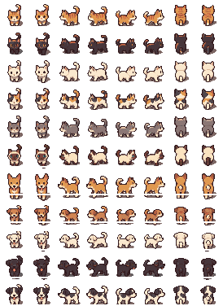
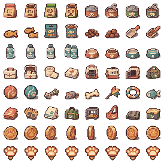
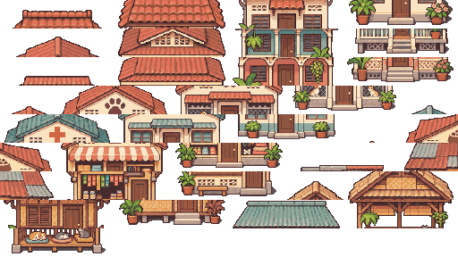

PawTrail pixel-art collection
Native game exports, enlarged with nearest-neighbor display. 32px base tiles; transparent sprite backgrounds.
Terrain — 127 tiles

Buildings — 9 structures

Environment — 36 objects

Animals — 11 identities, 88 frames

Items — 64 sprites and frames

Building chunks — 132 tiles

Extraction manifest · Usage notes